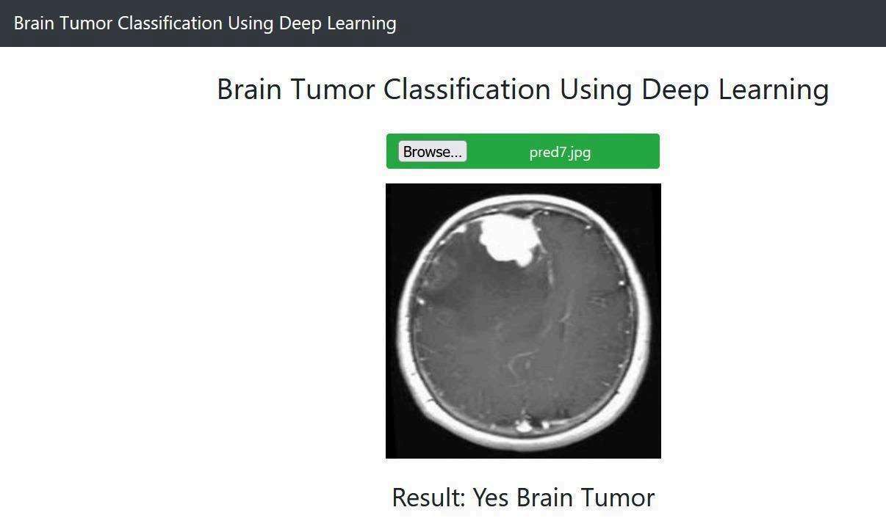
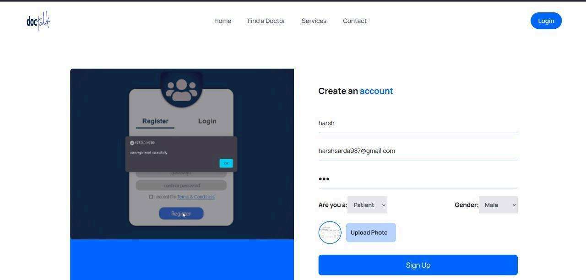
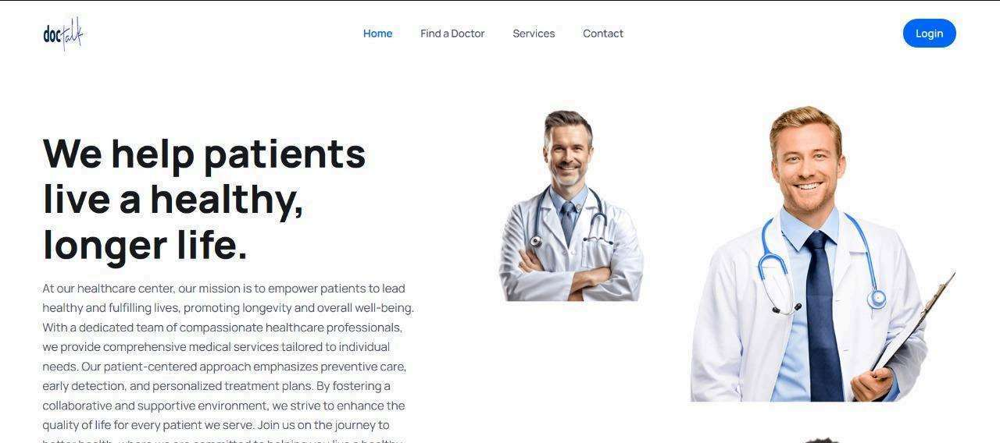
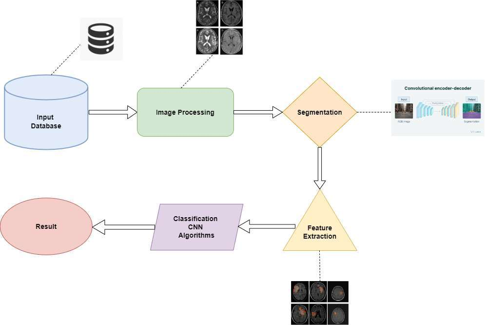
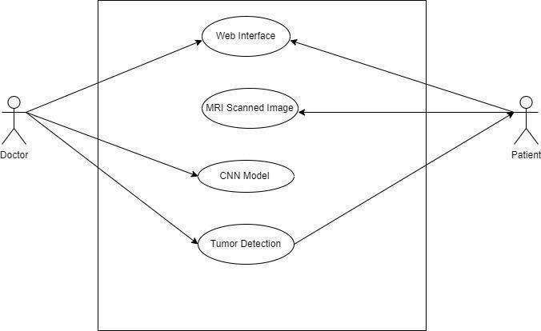
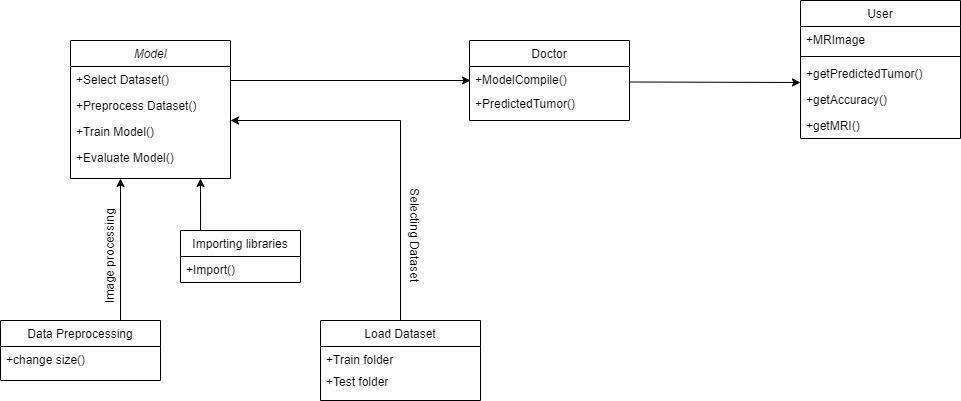

Brain Tumor Detection System
A web-based system that looks at an MRI scan of the brain and tells you whether a tumor is present. A deep learning model (a CNN) does the checking, and a website lets people sign up, upload a scan and see the result. Built as a third-year B.Tech minor project by a team of four.

At a glance
The Project in Numbers
The problem
Why It Exists
Brain tumors are hard to spot early, because early symptoms are vague and reading a scan takes specialised skill. This project explores how a computer can help by giving a quick first check on an MRI scan. It is a learning project and a decision aid, not a medical device, and a doctor always makes the diagnosis.
Early detection is hard
Tumors often show no clear symptoms in their early stages, and the scan reading can be slow and varies from one person to another.
Expertise is not everywhere
Specialist diagnostic skills are limited in remote and underserved areas. A website puts a first check within reach of more people.
Accuracy matters
Missing a tumor or raising a false alarm both have real costs, so the model was tested carefully on scans it had not seen.
Patient data is sensitive
Privacy was set as a goal from the start. Accounts sit behind sign-in with MongoDB authentication, and patient details are kept with each result.
What it does
How It Works
The idea is simple: give the model an MRI scan and let it check for signs of a tumor.
Step 1 and 2
Sign Up, Upload a Scan, Get an Answer
Is a tumor present?
A user creates an account, then uploads an MRI scan on the detection page. The scan is resized and cleaned up, and the model replies with a plain result: Yes Brain Tumor or No Brain Tumor.
- Accounts for patients and doctors
- Works from a normal web browser, with nothing to install
- The result shows right below the uploaded scan

The website
A Website Around the Model
Two parts make up the system. A website built with the MERN stack (MongoDB, Express, React and Node.js) takes care of the home page, accounts and sign-in. The detection page is a small Flask app that loads the trained model. The report also describes an admin view where healthcare providers can see patient details and results.

The model
The CNN, in Plain Words
The brain of the project is a Convolutional Neural Network, or CNN. It is a kind of deep learning model made for pictures.
CNN (Convolutional Neural Network)
Learns what a tumor looks like from labelled scans
A CNN studies an image in layers. The first layers pick out simple things such as edges and brightness. Later layers combine them into bigger shapes, and the last layers decide which group the scan belongs to. Here the two groups are "tumor" and "no tumor".
- Trained on labelled MRI scans, with 80% used for training and 20% held back for testing
- Every scan is resized to 64 by 64 pixels and its values are scaled before the model sees it
- Three rounds of pattern-finding layers, followed by a decision layer that gives the final answer
- A dropout step during training helps it avoid memorising the training scans
- Trained for 10 rounds, using batches of 16 scans at a time
Reading the scores
Results and What They Mean
The model was checked on scans it had not seen during training. These are the scores from the project report.
Architecture
How the System Fits Together
The path is the same for every scan. Images come from the dataset, are cleaned and prepared, then outlined and measured so the important features stand out. The CNN classifies them, and the result is shown.

Two more diagrams show how the people and the parts of the system relate to each other.
Diagram 2
Who Uses What
Who does what in the system?
Two kinds of people use the system. The doctor and the patient both work through the web interface and the MRI scan. The doctor also works with the CNN model, and both of them see the tumor detection result.
- Patients upload their scans
- Doctors work with the model and its results
- Both see the detection result

Diagram 3
How the Parts Connect
What are the building blocks?
The model selects and prepares the dataset, trains itself and is then evaluated. The training data is loaded from train and test folders, and each image is resized in a preprocessing step. A doctor compiles the model and gets the predicted tumor, and the user supplies an MRI image and reads back the prediction and its accuracy.
- Dataset loaded from train and test folders
- Images are resized before training
- The finished model is used to predict on new scans

The build journey
Phase by Phase
The project took 13 weeks, in ten phases, from picking the topic to the final presentation.
Choosing the Topic
Weeks 1 to 2
Proposed ideas, shortlisted three project statements, and finalised brain tumor detection.
Research
Week 3
Read IEEE research papers on brain tumor detection to see what had been tried and where the gaps were.
Collecting the Dataset
Week 4
Gathered MRI scans and studied the data to understand what the model would learn from.
Choosing the Tech Stack
Week 5
Finalised the algorithm and the tools: Python, TensorFlow and Keras for the model, and the MERN stack for the site.
Training and Testing
Weeks 6 to 7
Built the CNN model, trained it on the dataset and tested how well it worked.
Building the Website
Week 8
Started working on the website: home page, sign-up and sign-in.
Connecting the Backend
Week 9
Connected the backend to the website so accounts and results could be stored.
Expert Advice
Week 10
Met doctors and medical professionals to get feedback on the idea and the system.
Fixing and Integrating
Weeks 11 to 12
Resolved errors and integrated the trained model with the website.
Documentation
Week 13
Prepared the synopsis and the final presentation.
Behind the project
What We Read First
Before building anything the team studied published research on brain tumor detection. The main ideas that shaped the project:
Deep learning works well on scans
Studies show CNNs can find and outline brain tumors in MRI images across different tumor types and imaging settings.
Several models were considered
Papers using YOLO, VGG-based networks and R-CNN variants gave ideas for what else could be used.
Gaps worth noting
Many studies do not explain how a model reaches its answer, and often overlook patient data privacy and real-world clinical checks.
Doctors stay in charge
The system is meant to support medical staff with a first look, never to replace their judgement.
Under the hood
Tech Stack
Python
TensorFlow
Keras
CNN
OpenCV
Flask
React
MongoDB
Express
Node.js
Bootstrap
Built by Pranjal Parmar, Piyush Pingalkar, Harsh Sarda and Vaishali Sirimalla as a third-year B.Tech (Information Technology) minor project at K. J. Somaiya Institute of Technology, University of Mumbai (2023-24), under the guidance of Dr. Harsh Namdev Bhor. Harsh worked on UI/UX and the backend, Vaishali on the model and data, Piyush on integration and deployment, and Pranjal on testing, validation and documentation.